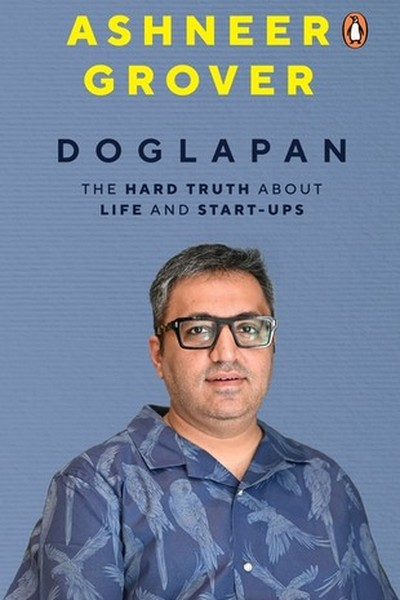

Library › Business & Startups
Doglapan: The Unfiltered Truth About Startups and Life — Summary & Key Lessons

Ashneer Grover's unfiltered truth about Indian startups, investors and hustling.
📖 OPEN THE FULL INTERACTIVE BREAKDOWN →🌐 Read it in Hindi, Hinglish, Gujarati, Tamil & 22 more languages — free, with audio.
💡 The Big Idea
Ashneer Grover — the explosive co-founder of BharatPe — wrote India's most honest startup book: raw, profane and unapologetic. Doglapan (Hindi slang for a two-faced person) is his account of building BharatPe from zero to a multi-billion-dollar fintech, and of the shark-tank world of Indian startups: founders, investors, valuations, and the masks everyone wears. His lessons are brutal and practical: valuation is not money, founders who call investors 'partners' are fooling themselves, and the only thing that matters is building a business that makes money. It's part memoir, part masterclass in the politics of Indian entrepreneurship — delivered with the directness of a man who stopped caring what anyone thinks.
🧠 The 6 Key Lessons
Lesson 1: Startup Math 101: Valuation Is a Number, Money Is Real
Part 1: The Startup World
Grover's first brutal lesson: a startup's valuation is a marketing number — it means nothing until someone actually pays you for your shares. He watched founders celebrate billion-dollar valuations while their companies burned cash with no path to profit, and he insists the only numbers that matter are revenue, costs and cash. His rule for founders: don't confuse the headline valuation with your bank balance, and never spend as if the paper wealth is real. The startup world's biggest lie is that valuation equals success; the second biggest is that funding equals validation. Real success is a business that can pay its own bills.
📖 Example: Grover describes how startups in his orbit raised at huge valuations and lived like royalty — until the funding winter hit and the same founders were bankrupt within months, because they had never built anything that made money. The valuation had been a… Read the full example →
⚡ Do this: Apply the honesty test to your own project: ignore any 'potential value' and answer — does this make money today, and if not, what's the concrete path? Write the actual numbers, not the story.
Lesson 2: Fundraising Is a Business: Investors Are Not Friends
Part 2: The Investors
Grover's most controversial chapter: he treats fundraising as a pure business transaction and warns founders against the 'investor as partner' romance. Investors have their own incentives — funds, carry, reputation — and when the music stops, those incentives will override any friendship. His advice: understand the term sheet line by line, know that control matters more than valuation, and never hand over so much that the board can fire you from your own company. The founder who treats investors as family usually ends up with a step-family. Politeness and transparency are good; naivety is fatal.
📖 Example: Grover recounts his own boardroom battles — including being pushed out of BharatPe — as proof that the founder-investor relationship is a power game dressed in friendly language. The founders who survive are the ones who never forgot who holds the shares and… Read the full example →
⚡ Do this: If you ever raise money (or sign any significant deal), read the entire document yourself — every clause — and get one independent opinion. Never sign on trust; sign on understanding.
Lesson 3: The Founder's Job: Do Whatever It Takes, Legally
Part 3: The Hustle
Grover's self-image: a founder is not a CEO in a suit — he's a hustler who does whatever it takes, legally, to make the business work. He describes his own journey from a Delhi middle-class family to BharatPe's founding as a series of unglamorous, relentless moves: taking the calls nobody wants, chasing the merchants nobody cares about, doing the sales himself when no one else would. His lesson: prestige is the enemy of early-stage survival. If you're too senior to talk to customers, too proud to make cold calls, too cool to clean up your own mess — you're not a founder, you're a spectator. The founder's job title is 'whatever it takes'.
📖 Example: Grover tells of going to kirana stores himself in BharatPe's early days, QR code in hand, convincing one merchant at a time — the work that the 'vision' later got credit for. The hustle came first; the vision was the story told after. Read the full example →
⚡ Do this: Do one 'whatever it takes' task this week that feels beneath you — a cold call, a cleanup, a boring errand that moves the business. The founder does the work the CEO's job description forgot.
Lesson 4: The Indian Consumer: Build for Bharat, Not Just India
Part 3: The Hustle
Grover's market insight: the real Indian opportunity is not the 50 million elite — it's the 500 million in tier-2 and tier-3 towns and the kirana economy. BharatPe succeeded by serving merchants — the small shopkeepers of Bharat — not by building another app for urban professionals. His lesson for Indian founders: the biggest markets are the least glamorous, the customers who are ignored by global apps are the ones who will make you rich, and pricing must be built for a country where every rupee counts. Build for Bharat, and the valuations will follow; build only for the metros, and you'll compete with the world's best on their turf.
📖 Example: Grover describes how BharatPe's focus on merchant payments — a segment global fintechs ignored — created a business that processed billions in transactions, because millions of shopkeepers needed exactly what nobody was giving them: cheap, reliable QR… Read the full example →
⚡ Do this: Ask about your product: 'Who is the biggest group of customers being ignored?' Consider how you'd redesign your offer — price, language, distribution — for that underserved majority.
Lesson 5: Culture Is Set by the Founder's Example
Part 4: The Organization
Despite his abrasiveness, Grover is clear-eyed about organizations: culture is not posters on the wall — it is what the founder tolerates, rewards and does himself. If the founder works weekends, the team works weekends; if the founder lies to customers, the team lies to everyone. His warning: a startup's culture decays the moment the founder stops modelling it, and it cannot be delegated to HR. The practical founder's task is to be the loudest example of the behaviour they want — speed, honesty, frugality — and to remove the people who poison it early, no matter how talented. One toxic hire, protected for performance, teaches the whole company that the values are optional.
📖 Example: Grover describes how BharatPe's early speed — decisions in hours, launches in days — came from his own visible urgency, and how the culture slowed the moment senior hires brought 'corporate' habits that were tolerated for their titles. The example, not the… Read the full example →
⚡ Do this: Identify one behaviour you preach but don't practice. Fix it visibly this week — your team will notice the difference more than any email you could send.
Lesson 6: Resilience: The Only Guaranteed Startup Skill
Part 5: The Survival
The book's final lesson, written after his own dramatic exit from BharatPe and public battles: everything in the startup world is uncertain — funding, valuation, loyalty, reputation — except one thing: your ability to take the hit and keep moving. Grover's resilience framework: never define yourself by a single company, keep your skills and network warm, and treat every setback as a new chapter rather than an ending. He speaks openly about the mental toll — the attacks, the boardrooms, the court cases — and credits survival to family, focus and the refusal to play the victim. In Indian startups, as in life, the people who last are not the smartest or the luckiest; they are the ones who refuse to stay down.
📖 Example: Grover's own story — building BharatPe, being ousted in a public war, and then returning with new ventures and a bestselling book — is the demonstration: the company was a chapter, not the book. The resilience was the asset that outlived every battle. Read the full example →
⚡ Do this: Write your 'resilience asset' list: skills, network, family and cash that would survive any single project failing. Strengthen one item this month — the backup plan is the freedom.
✅ 5-Step Action Plan
- Write the real numbers of your venture (revenue, costs, cash) — no story, no valuation.
- Read your next significant contract fully, clause by clause, with one independent opinion.
- Do one 'beneath you' task this week that moves the business.
- Redesign your offer for the largest ignored customer segment.
- Strengthen one personal resilience asset (skill, network, savings) this month.
⚠️ When This Doesn't Work
Grover's 'startups are not charity, they are business' is the most brutally honest Indian founder book ever — and its author is the warning inside the book he wrote: Ashneer Grover built BharatPe with the aggression he preaches, publicly called out everyone he saw as incompetent, and then the same aggression — the 'doglapan' — brought him down in a scandal that cost him the company he built. The caveat: the book's honesty is real and its advice is often right — but the author's own story is the chapter he couldn't write: aggression is a tool, and like every tool, it cuts the user when it becomes the identity. Be honest; also be professional.
💀 The Graveyard Proves It
🦈 BharatPe & Ashneer — The Shark Who Bit His Own Company. Burn: A $2.8B fintech's reputation + his own seat. Read the full case study →
💬 Best Quotes from Doglapan: The Unfiltered Truth About Startups and Life
- “Valuation is a number. Cash is real.”
- “The founder's job description is: whatever it takes, legally.”
- “Culture is what the founder tolerates — so tolerate carefully.”
Interactive version: mark lessons as read, listen in your language, share quote cards.